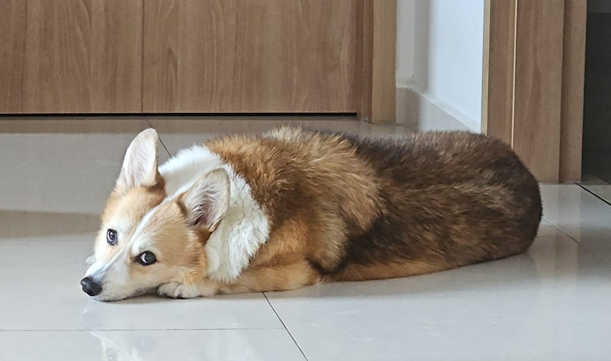

My name is Hei and I am learning about programming. I am interested in creating innovative web applications and game applications in the near future. I am making some lifestyle changes to improve my mindset and health. I am currently trying to learn how to code and I am currently learning HTML, CSS, and JavaScript. I am also trying to learn how to use GitHub and GitHub Pages to host my projects. I am also trying to learn how to use the command line and how to
A little more about myself. I have a loving partner whom I love, am married to, and loves me wholeheartedly. I enjoy doing yoga, reading manga, and playing video games. I am introverted and enjoy spending time alone or with a small group of close friends. Life is good. I am enjoying life as it is.

Here's a picture of my dog, Toto. She is a corgi and she is very cute. Enjoy!